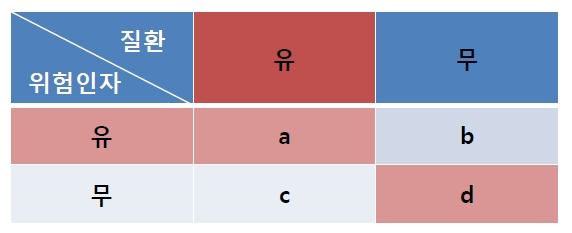
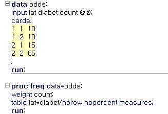
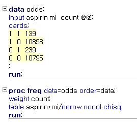
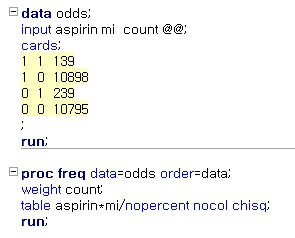
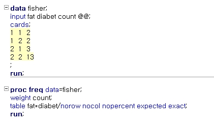
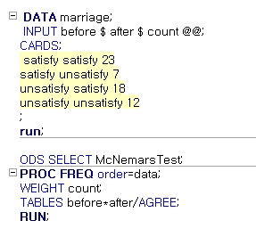

Chapter 4 교차분석
두 범주형(명목형, 순서형) 변수간의 연관 관계(association)를 볼 때 교차표(분할표)를 작성하여 변수들간 관계를 분석
교차 분석 혹은 카이제곱검정(chi-square test) 이라고 함
교차 분석의 의미는 두 변수의 빈도 표(frequency table)를 교차시켰다는 의미이며, 교차 분석에 사용되는 검정 통계량이 \(\chi^2\) 분포를 따르기 때문에 카이제곱검정이라 함
교차표(cross-tabulation, 분할표: contingency table)는 각 범주형 변수에 대한 빈도표를 행과 열로 결합시켜 놓은 형태
일반적으로 분할표는 행에는 설명(독립) 변수에 해당되는 변수를 열에는 반응(종속) 변수를 놓음
\(r \times c\) 분할표

변수 \(A: r\)개 범주, 변수 \(B: c\)개 범주
전체 \(n\)회의 독립적인 실험을 반복 결과 \(A\)의 \(i\)번째 범주와 \(B\)의 \(j\)번째 범주에 속하는 시행횟수는 \(n_{ij}(i=1,\ldots,r, j=1,\ldots,c)\), \(n_{i.}=\sum_{j=1}^cn_{ij}\), \(n_{.j}=\sum_{i=1}^rn_{ij}\), \(n=\sum_{i=1}^rn_{i.}=\sum_{j=1}^cn_{.j}\).
\(A\)의 \(i\)번째 범주와 \(B\)의 \(j\)번째 범주의 결과가 발생할 확률은 \(p_{ij}(i=1,\ldots,r, j=1,\ldots,c)\), \(p_{i.}=\sum_{j=1}^cn_{ij}\), \(p_{.j}=\sum_{i=1}^rp_{ij}\), \(1=\sum_{i=1}^rp_{i.}=\sum_{j=1}^cp_{.j}\).
4.1 상대위험률과 오즈비
요인과 결과가 각각 두 개의 범주로 나누어진 분할표 (\(2\times 2\) table) 자료의 경우, 연관성을 나타내는 측도로서 주로 사용되는 것은 상대 위험률(relative risk)과 오즈비(odds ratio, 교차비)임
상대위험률 \[RR=\frac{\text{실험군에서의 위험률}}{\text{대조군에서의 위험률}}\]
오즈비(교차비) \[OR=\frac{\text{처리 그룹에서 사건 발생 확률/처리 그룹에서 사건이 발생하지 않을 확률}}{\text{대조 그룹에서 사건 발생 확률/대조 그룹에서 사건이 발생하지 않을 확률}}\]
오즈(odds) \[\frac{\text{처리 그룹에서 사건 발생 확률}}{\text{처리 그룹에서 사건이 발생하지 않을 확률}}\]
상대위험률은 코호트 연구(cohort study)나 실험군과 대조군이 사전에 정해지고 난 후 그 결과를 관찰하게 되는 임상시험(clinical trials) 연구에서만 계산되며, 오즈비는 사례-대조 연구(case-control study)에서 이용 됨

상대위험률 추정량 \[RR=\frac{a/(a+b)}{c/(c+d)}\]
오즈비 추정량 \[OR=\frac{a/b}{c/d}=\frac{ad}{bc}\]
다음은 당뇨 환자 \(25\)명과 당뇨가 없는 정상인 \(75\)명을 대상으로 비만 유무를 조사한 결과이다. 비만과 정상 체중에 대해 당뇨의 상대위험률과 오즈비를 산출하라.

SAS Code



4.2 독립성 검정
두 범주형 변수간 독립인지 아닌지(연관성이 있는지 없는지)를 살펴보는 검정을 독립성 검정(test of independence)이라 함
\(p_{ij}\)를 한 관측값이 범주 \((A_i, B_j)\)에 속할 확률이라 하고, \(p_{i.}\)을 한 관측값이 변수 \(A\)의 \(i\)번째 범수에 속할 주변확률, \(p_{.j}\)를 변수 \(B\)의 \(j\)번째 범수에 속할 주변확률이라고 하면, 확률이론에 의해 두 변수 \(A\)와 \(B\)가 독립일 필요충분조건은 모든 \((i,j)\)쌍에 대해 \(p_{ij}=p_{i.}p_{.j}\) 임
독립성 검정 가설
\(H_0 : p_{ij}=p_{i.}p_{.j},\quad i=1,\ldots,r,\quad j=1,\ldots,c\) (두 변수는 독립이다)
\(H_1 : p_{ij} \ne p_{i.}p_{.j},\quad i=1,\ldots,r,\quad j=1,\ldots,c\) (두 변수는 연관성이 있다)
검정 통계량 \[T=\sum_{i=1}^r\sum_{j=1}^c \frac{(n_{ij}-\hat{e}_{ij})^2}{\hat{e}_{ij}}\sim \chi^2((r-1)(c-1))\]
여기서 \(\hat{e}_{ij}=n_{i.}n_{.j}/n\)이며, 이를 추정된 기대빈도(expected frequency)라 함
검정통계량의 의미 : 만약 두 변수가 독립이라면 기대빈도 \(e_{ij}\)는 관측빈도 \(n_{ij}\)와 같아야하고 \(T\) 값은 \(0\)이 되어야 함. 즉 \(T\)가 \(0\)에 가까우면 두 변수는 관계가 없다고 결론 내릴 수 있음
기각역 \[T > \chi^2_{\alpha, (r-1)(c-1)}\]
기대 빈도 5 미만 문제
교차분석 검정 통계량은 근사적으로 \(\chi^2\) 분포를 따르지만, 근사 조건으로 각 셀의 기대 빈도가 5 이상이어야 함
기대 빈도가 5미만인 셀의 비율이 \(20\%\)를 넘으면 계산된 검정 통계량은 \(\chi^2\) 분포로 근사하지 않으므로
표본크기 \(n\)을 키운다.
변수의 수준을 합쳐 셀의 수를 줄인다.
Fisher의 정확 검정(Fisher’s exact test)를 시행한다.
소량의 아스피린(aspirin) 복용이 심장병으로 인한 위험률을 줄이는 데 효과가 있는지를 알아보고자 하였다. \(22,071\)명의 남성을 확률화를 통해 두 그룹으로 나눈 후, 한 그룹에는 저용량(\(325mg\)/일)의 아스피린을 복용시키고 다른 그룹에는 플라시보(placebo)를 복용하게 한 후 약 60개월간 관찰하여 심근경색(myocardial infarction)을 일으키는지 여부를 관찰하였다. 아스피린의 복용여부와 심근경색간의 연관성이 존재하는가?

SAS Code



4.3 동질성 검정
독립성 검정 문제와 비슷한 개념으로 동질성 검정(test of homogeneity)이 있음
\(r \times c\) 분할표에서 \(A_1, \ldots, A_r\)은 요인 \(A\)의 부차모집단(subpopulation)으로 간주하고, 각 부차모집단에서 \(B\)의 범주인 \((B_1, \ldots, B_c)\)가 동질적인지 검정하는 방법
실험의 경우 \(r\)개의 비슷한 실험 \(A_1, \ldots, A_r\)을 시행할 때 이들이 동질적인 실험의 형태로 나타나는가를 알아보기 위해 반응 \(B\)의 각 수준에 대한 도수를 관측하여 동질성 여부를 검증할 때 시행
독립성 검정과 독립성 검정의 차이는 독립성 검정에서는 총 시행횟수 \(n\)이 고정되는 반면, 동질성 검정은 \(A\)의 각 부차모집단인 \(A_1, \ldots, A_n\)에서의 표본크기인 \(n_1, \ldots, n_r\)이 고정
동질성 검정 가설
\(H _{0} :(p _{11}, \ldots ,p _{1c} )= \cdots =(p _{r1} , \ldots ,p _{rc} )=(p _{1} ,\ldots ,p _{c} )\) (부차모집단의 분포는 동일하다)
\(H_1 : \text{not} \hskip3pt H_0\)
여기서 \((p_{1},\ldots,p_{c})\)는 \((B_1,\ldots, B_c)\)의 확률을 나타내며, \(\sum_{i=1}^cp_{i}=1\).
독립성 검정과 동질성 검정은 시작이 틀리지만 귀무가설 하에서 검정통계량의 형태와 자유도는 같음
검정 통계량 \[T=\sum_{i=1}^r\sum_{j=1}^c \frac{(n_{ij}-\hat{e}_{ij})^2}{\hat{e}_{ij}}\sim \chi^2((r-1)(c-1))\]
여기서 \(\hat{e}_{ij}=n_{i.}n_{.j}/n\)이며, 이를 추정된 기대빈도(expected frequency)라 함
기각역 \[T > \chi^2_{\alpha, (r-1)(c-1)}\]
소량의 아스피린(aspirin) 복용이 심장병으로 인한 위험률을 줄이는 데 효과가 있는지를 알아보고자 하였다. \(22,071\)명의 남성을 확률화를 통해 두 그룹으로 나눈 후, 한 그룹에는 저용량(\(325mg\)/일)의 아스피린을 복용시키고 다른 그룹에는 플라시보(placebo)를 복용하게 한 후 약 60개월간 관찰하여 심근경색(myocardial infarction)을 일으키는지 여부를 관찰하였다. 아스피린의 복용여부와 심근경색간의 연관성이 존재하는가?
SAS Code


4.4 Fisher의 정확 검정
분할표에서 기대빈도가 \(5\)보다 작은 셀이 전체의 \(20\%\) 이상인 경우에는 카이제곱 검정 대신 Fisher의 정확 검정(Fisher’s exact test)를 사용
예제) 비만과 당뇨
당뇨 \(5\), 당뇨가 없는 정상 \(15\)명, 총 \(20\)명을 대상으로 비만 여부를 조사한 자료

비만과 당뇨 예제의 기대빈도

가설
\(H_0\) : 두 변수는 독립이다.
\(H_1\) : 두 변수는 독립이 아니다.
Fisher의 정확 검정은 분할표의 주변합이 고정되었다는 가정하에 가능한 모든 경우에 대한 확률을 기반으로 가설을 검정하는 방법
위의 예제에서 총 \(20\)명 중 비만인 사람은 \(4\)명, 정상인 사람은 \(16\)명 임. 따라서 \(20\)명 중 \(4\)명을 뽑는 가능한 모든 경우의 수는 \(_{20}C_4\)
여기서 비만 \(4\)명은 당뇨와 정상으로 나뉘어지므로 선택될 수 있는 모든 조합은 \(5\)가지 임

가능한 조합의 형태

P-value

SAS Code



4.5 맥니마 검정
맥니마 검정(McNemar test)는 짝지어진 범주형 자료의 경우 전/후 간 분포의 차이가 있는지 검정하는 방법
짝지어진 표본의 예
새로운 이슈가 발생한 경우 이슈 전후의 \(A\) 대통령 후보에 대한 지지 여부(동일 응답자, 패널(panel))
동일한 대상으로 교육전후 안전벨트 거부여부에 대한 조사
전후 사이에 응답 대상이나 실험 대상이 바뀌는 경우, 혹은 전혀 다른 항목을 측정하는 경우 맥니마 검정을 사용할 수 없음
반드시 동일 실험 대상이 전후에 사용되어야 하고 같은 개념을 묻거나 실험 해야 함
맥니마 검정시 교차표

가설
\(H_0 : p_1=p_2\) (실험 전의 yes 확률과 실험 후의 yes 확률이 같다)
\(H_1 : p_1 \ne p_2\) (양측), \(p_1>p_2\) 혹은 \(p_1<p_2\) (단측)
검정통계량 \[T=\frac{B-C}{\sqrt{B+C}} \sim N(0,1)\]
\(\hat{p}_1=\frac{A+B}{N}\), \(\hat{p}_2=\frac{A+C}{N}\), \(\hat{p}_1 - \hat{p}_2=\frac{B-C}{N}\) 그리고 귀무가설 하에서 \((B-C)/N=0\)
다음은 결혼한 지 \(3\)년이 된 남성 \(60\)명을 대상으로 결혼 전후의 경제생활의 만족도를 조사한 자료이다. 이 자료에 대해 결혼 전과 결혼 후의 경제생활의 만족도에 있어서 차이가 있는지 검정하라.

SAS Code
